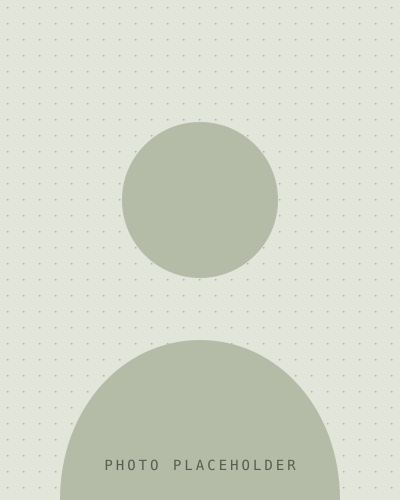

JEFFERSON/ SOLANO.

THOUGHTFULLY BUILT.
I build digital experiences
that work for people.
From complex web applications to accessible, content-driven websites, I turn technical challenges into practical solutions that are easy to use.
- Years in frontend
- 5+
- Eligible mobile release
- ~10 min
- previously 1–2 days
- Channels per product
- 2
- web + mobile
- Runtime dependencies on this page
- 0
- HTML, CSS, vanilla JS
- React.js
- Next.js
- React Native
- JavaScript ES6+
- HTML5
- CSS3
- RESTful APIs
- JSON
- Node.js
- WordPress
- Shopify
- Sitecore
- WCAG
- Lighthouse
- Storybook
- Matomo
- Git
- Figma
MORE THAN
CODE.
I like making complicated things feel simple.
I’m Jefferson, a frontend developer with more than five years of experience building and improving web and mobile applications. I translate complex requirements into useful interfaces, working closely with designers, content specialists, developers and subject-matter experts.
My work spans React.js, Next.js, JavaScript, HTML5, CSS3 and RESTful APIs, alongside content-driven websites, accessibility, SEO, analytics and performance optimisation.
THE WORK.
THE THINKING.
Three projects. Different challenges.
Open an exhibit to explore the detail.
01TRAKMAKING RELEASES FASTER
Challenge
Even a very small mobile change needed a fresh build and app-store approval, so releases could take one to two days.
My contribution
I proposed Microsoft App Center CodePush and led its implementation, alongside my work on React.js and Next.js web experiences and React Native mobile features for Trak’s job management platform.
Approach
Git-based code verification came before every eligible over-the-air release. On the web side I built reusable components, integrated RESTful APIs and ran Lighthouse reviews to improve usability, accessibility and performance.
Outcome
Eligible updates could reach production in about 10 minutes. Customers received suitable fixes sooner. Native changes still followed the normal build and store process.
React.js / Next.js / React Native / RESTful APIs / CodePush / Lighthouse
Visit Trak trak.co (opens in a new tab)02BURDENSONE SERVICE, TWO CHANNELS
Challenge
Customers needed to browse products, order and check their accounts on the website or in a mobile app. The work was more than shrinking screens: the same tasks had to make sense in different contexts.
My contribution
I helped deliver product browsing and filtering, shopping-cart orders, account information, invoices and statements.
Approach
We built a new product around an existing web service. I built responsive interfaces and reusable components, integrated RESTful APIs and tested across devices to keep interactions consistent.
Outcome
Customers could choose the channel that suited them and complete the same core tasks on either. No sales or adoption figures are claimed.
React.js / React Native / JavaScript / Responsive UI / RESTful APIs / Reusable components
Visit Burdens burdensbathrooms.com.au (opens in a new tab)03FLASHING DESIGNERCOMPLEX LOGIC, CLEAR INTERFACES
Challenge
Mathematical calculations and algorithmic requirements had to become understandable, reliable application features.
My contribution
I built the calculation-related functionality and worked with a physicist and a mathematician to understand and check the algorithms.
Approach
Ask the right questions early and validate with specialists instead of assuming. I also helped move the app from React Native with Expo to React Native without Expo.
Outcome
Specialist requirements became working mobile functionality, with accuracy and validation guiding the implementation.
React Native / Expo migration / JavaScript / Algorithmic calculations
View on the App Store Burdens Flashing Designer (opens in a new tab)THE PATH
SO FAR.
Two product teams, one constant:
web and mobile built side by side.
-
Sep 2023 – Jun 2026
Senior Frontend Developer · Trak, Melbourne
- Developed React.js and Next.js web experiences alongside React Native features for a job management platform.
- Built responsive, reusable components and integrated RESTful APIs across web and mobile.
- Improved usability, accessibility and performance through semantic HTML, refactoring, cross-browser testing and Lighthouse reviews.
- Worked with designers and stakeholders on UI/UX implementation and CMS-driven content updates.
- Proposed and led App Center CodePush: eligible releases in ~10 minutes instead of 1–2 days.
-
Dec 2020 – Sep 2023
Front End Developer · Digital Basis, Melbourne
- Built new web and mobile products with React.js, Next.js, React Native, JavaScript, HTML5, CSS3 and Node.js.
- Implemented reusable UI components, RESTful API integrations, CMS publishing workflows and accessible interface patterns.
- Applied technical SEO, Lighthouse checks, Google Analytics and Matomo; used Storybook and Fractal for component consistency.
- Collaborated with designers, developers and specialists to solve complex requirements and test across devices.
Education
- Bachelor of Software Engineering2018
- Advanced Diploma of Webmaster2017
- Diploma of Analysis and Development of Information Systems2015
Certifications
- Blue Card2024
- Scrum Foundation Professional Certificate2020
Toolkit
WHY QM.
WHY ME.
Why I want to join Queensland Museum,
and how my experience maps to the AO6 brief.
Queensland Museum looks after 15.2 million objects, specimens and stories, shared across four museums and online.
The Digital Solutions team is building a modern, API-driven platform with a headless CMS to connect people with those collections. I want to use what I’ve learned building web and mobile products for something with a clear public purpose: helping people explore collections, learn from stories and find information easily.
- 01 · PURPOSE
Public-facing work that matters
I enjoy interfaces that look good, work reliably and make sense to the people using them. Visitors, students and researchers deserve that.
- 02 · PLATFORM
Ready for headless
React.js and Next.js in both roles, plus years structuring and presenting CMS content through APIs. Headless is the natural next step.
- 03 · EVERY VISITOR
Accessible and fast by default
Semantic HTML, WCAG principles, Lighthouse, analytics and cross-device testing are already part of how I deliver.
- 04 · TEAMWORK
Comfortable across disciplines
Designers, content teams, stakeholders, even a physicist and a mathematician. I explain options clearly and keep the outcome in focus.
The brief, mapped to what I’ve done.
Technical proficiency
13 requirements · 12 direct · 1 transferable
Relevant qualificationDirect
Bachelor of Software Engineering (2018), Advanced Diploma of Webmaster (2017) and Diploma of Analysis and Development of Information Systems (2015).
Modern front end web applicationsDirect
More than five years building and improving web applications at Trak and Digital Basis, covering new products and established platforms.
HTML5, CSS3 and JavaScript ES6+Direct
Core tools in both roles. This site is hand-written in HTML, CSS and vanilla JavaScript with no framework or build step.
React and Next.jsDirect
React.js and Next.js web experiences at Trak and Digital Basis, plus React Native for the matching mobile products.
Headless CMS (Sanity, Contentful or similar)Transferable
Content-driven work with WordPress, Shopify, SharePoint and Sitecore, and structuring, retrieving and presenting dynamic content in React and Next.js through RESTful APIs. These are the same principles behind headless platforms, and I’m keen to apply them to QM’s headless CMS implementation.
Responsive, mobile-first designDirect
Burdens required the same tasks to work on the website and in a mobile app, so layouts were planned around how people complete tasks in each context.
RESTful APIs and JSONDirect
API integration across web and mobile in both roles, including ordering, account information, invoices and statements.
Git and version control workflowsDirect
Git, GitHub and Bitbucket. At Trak, Git-based code verification was the gate before any over-the-air release.
Accessibility standards (WCAG)Direct
Semantic HTML, sensible heading structures, descriptive links, image alternatives and keyboard access. I use Lighthouse, and I know automated checks don’t replace manual testing.
Performance, usability and SEODirect
Lighthouse reviews, refactoring, cross-browser testing and technical SEO at both Trak and Digital Basis.
Next.js applicationsDirect
Next.js web experiences built in both roles.
Analytics and engagement platformsDirect
Google Analytics and Matomo, used to understand how digital products were being used and to guide improvements.
Design systems and component librariesDirect
Reusable UI components documented with Storybook and Fractal at Digital Basis; component documentation at Trak.
Vision
At Burdens the challenge was not reproducing a screen on a smaller device. We worked out how people complete the same tasks in different contexts, then designed for each.
React.js and Next.js in both roles, and a clear path from traditional CMS work to headless content delivery through APIs.
Moved Burdens Flashing Designer from React Native with Expo to React Native without Expo while the product kept evolving.
Results
Lighthouse, Google Analytics and Matomo helped me look past “feature delivered” to how well it worked for the people using it.
Worked with a physicist and a mathematician to validate the algorithms behind Flashing Designer before building them.
Proposed and led CodePush at Trak. Eligible releases went from one to two days to about 10 minutes.
Accountability
Semantic HTML, accessible patterns, Git-based workflows, code verification and testing across browsers and devices.
Explaining options to designers, developers, stakeholders and specialists, listening to constraints and keeping the outcome in focus.
Moving from traditional CMS platforms towards headless architecture, and building this site to practise what the role asks for.
An independent personal portfolio, prepared for the Front End Web Developer (AO6) opportunity at Queensland Museum. No affiliation or endorsement is implied.
LET’S BUILD
SOMETHING
MEANINGFUL.
Jefferson Solano
Front End Web Developer · Brisbane, Australia